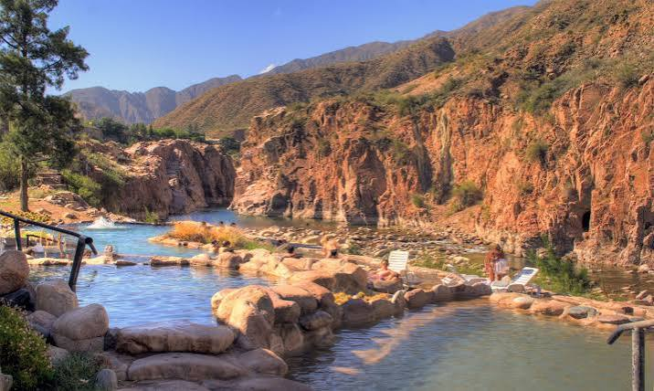
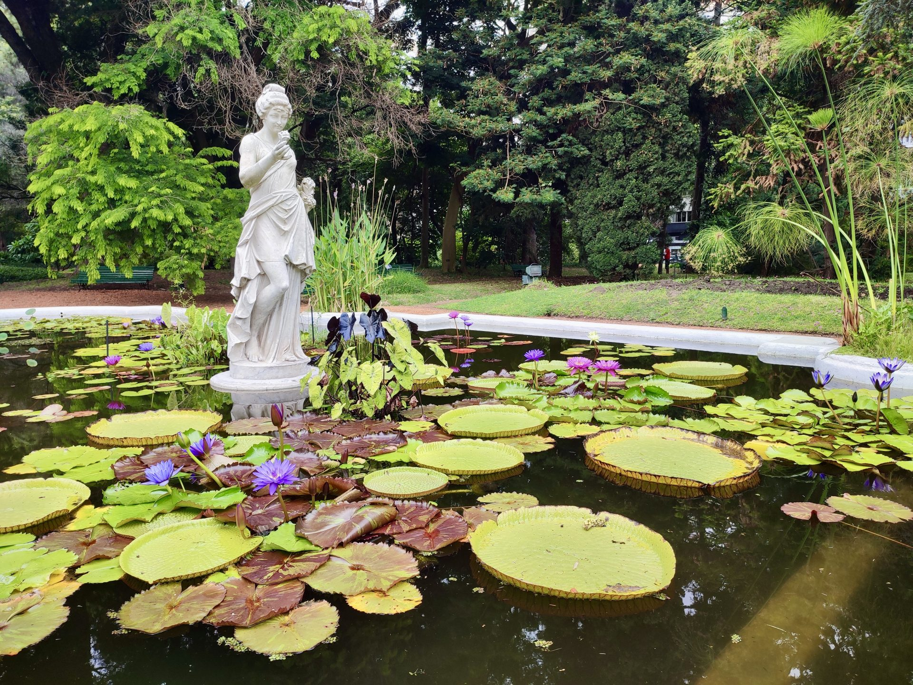
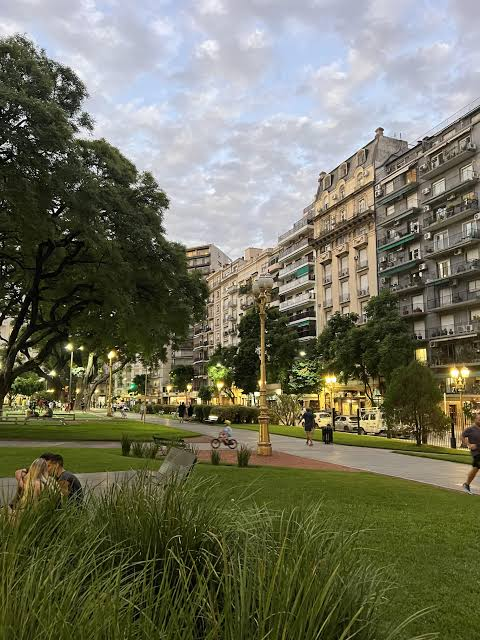
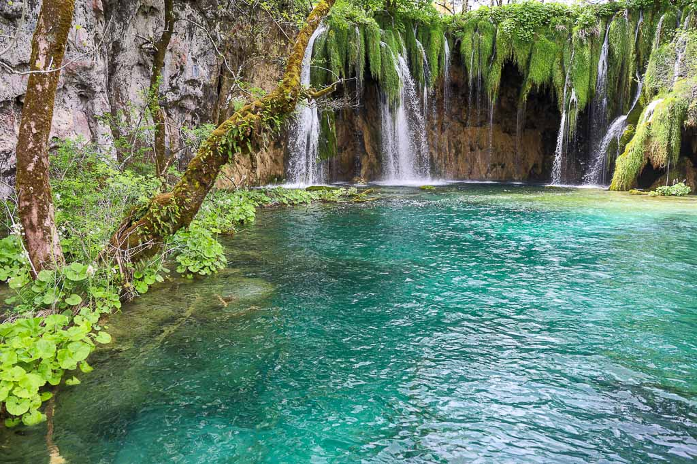

Termas de Eudamon

Las Termas de Eudamon son un complejo de aguas termales naturales, ideales para relajarse y disfrutar de la naturaleza. Sus piscinas termales ofrecen una experiencia única de bienestar y tranquilidad.
Donde florece el bienestar

Las Termas de Eudamon son un complejo de aguas termales naturales, ideales para relajarse y disfrutar de la naturaleza. Sus piscinas termales ofrecen una experiencia única de bienestar y tranquilidad.

El Jardín Botánico de Eudamon es un espacio verde con una gran variedad de flora autóctona y exótica. Es perfecto para pasear, aprender sobre la biodiversidad y disfrutar de la belleza natural.

La Plaza de los Filósofos es un lugar emblemático donde se realizan actividades culturales y eventos al aire libre. Es un punto de encuentro para la comunidad y los visitantes.

El Parque Nacional de Eudamon es un área protegida que alberga una rica biodiversidad. Ofrece oportunidades para el ecoturismo, la educación ambiental y la observación de la fauna y flora local.